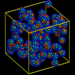
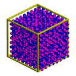
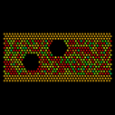
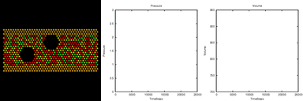
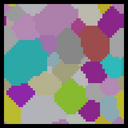
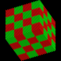
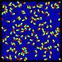
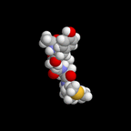
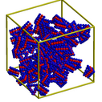

These are various animations created with Pizza.py for output data from the LAMMPS molecular dynamics simulator. Some are from 3d simulations; others are from simpler 2d systems that illustrate the kinds of problems LAMMPS can easily be setup to run.
For each problem, Pizza.py was used to create a series of images. I use the ImageMagick convert program to make lo-resolution MPEG movies and QuickTime Pro (on a Mac laptop) to make hi-resolution QuickTime movies. The lo-res MPEG movies are posted here; a single hi-res image frame is also shown so you can see what the QuickTime movie looks like. Links to the Pizza.py scripts that created the image sequences are also given.
For all movies on this page, click on the small image to trigger the animation. You may need to slow-down/speed-up the MPEG playback on your machine. If your browser uses the "xanim" program to view MPEG movies, the speed-up key is "-" and the slow-down key is "=".
| bucky | decorated bucky-ball particle self-assembly |
| dipole | dipolar particle melt |
| flow | 2d flow around an obstacle |
| grain | 2d grain growth via Potts model |
| melt | melt of Lennard-Jones solid |
| micelle | 2d micelle self-assembly |
| peptide | small peptide in solution |
| tri | decorated triangular particle self-assembly |
Each particle is a rigid C60 molecule with two patches of attractive atoms on each end that induce ordering with nearby particles. These images were made with the Pizza.py raster tool wrapping Raster3d.
See this paper from Sharon Glotzer's group (U Michigan) for more examples of macro-particle self-assembly and phase behavior.
Pizza.py script to create images. Hi-resolution image from QuickTime movie.
1.7 Mb lo-resolution MPEG movie
Two overlapping spheres per particle to indicate dipole orientation. These images were made with the Pizza.py raster tool wrapping Raster3d.
Hi-resolution image from QuickTime movie.
1.2 Mb lo-resolution MPEG movie
Two spherical voids in a flowing atomic fluid. The flow images were made with the Pizza.py raster tool wrapping Raster3d. The movie with plots was made using the mplot() method of the gnu tool (or matlab tool) and then combining the flow and plot images with the montage() method of the image tool (calls ImageMagick montage command).
Pizza.py script to create flow images. Pizza.py script to create plots and combine them with flow images. Hi-resolution image from 1st QuickTime movie. Hi-resolution image from 2nd QuickTime movie.
 Flow only = 1.5 Mb lo-resolution MPEG movie.
Flow + plots = 1.5 Mb lo-resolution MPEG movie.
Each pixel is a lattice site in a 2d Potts model formulated to model grain growth via Monte Carlo sweeps of the lattice. These images were made with the Pizza.py raster tool wrapping Raster3d reading a mesh file with the mdump tool. Thanks to Aidan Thompson for implementation of the Potts model in a kinetic Monte Carlo code we are developing at Sandia.
Pizza.py script to create images. Hi-resolution image from QuickTime movie.
185 Kb QuickTime movie
Atoms are colored to visualize the melt process. These images were made with the Pizza.py raster tool wrapping Raster3d.
Pizza.py script to create images. Hi-resolution image from QuickTime movie.
1.5 Mb lo-resolution MPEG movie
The 3-atom lipids have a hydrophyllic head that likes solvent and a hydrophobic tail that doesn't like solvent. These images were made with the Pizza.py svg tool.
Pizza.py script to create images. Hi-resolution image from QuickTime movie.
4.3 Mb lo-resolution MPEG movie
These images were made with the Pizza.py rasmol tool wrapping RasMol.
Pizza.py script to create images. Hi-resolution image from QuickTime movie.
1.2 Mb lo-resolution MPEG movie
Each particle is a rigid 3-layer triangular-shaped molecule an inner layer of attractive atoms that induces ordering with nearby particles. These images were made with the Pizza.py raster tool wrapping Raster3d.
See this paper from Sharon Glotzer's group (U Michigan) for more examples of macro-particle self-assembly and phase behavior.
Pizza.py script to create images. Hi-resolution image from QuickTime movie.
3.1 Mb lo-resolution MPEG movie
(Glotzer) Zhang and Glotzer, NanoLetters, 4, 1407-1413 (2004).
{kind=link}
{kind=link}
{kind=link}
{kind=link}
{kind=link}
{kind=link}
{kind=link}
{kind=link}
{kind=link}